5
Placing Modgen Members Interactively
In this section you are going to learn placing Modgen members interactively in the Modgen Editor window. This section covers the following topics:
Moving Instances
Modgen members can be moved interactively to other empty or non-empty cells on the same or a different row/column. If an instance is moved within the same row/column, the devices in that row/column are re-ordered. If an instance is moved to a different row/column, the positions of the moved instance and the device on which it is dropped are swapped.
To move instances to an empty or non-empty cell, you can use one of the following methods:
Method 1
- Click the instance you want to move
-
While holding down the mouse button, drag the instance to the required empty cell.
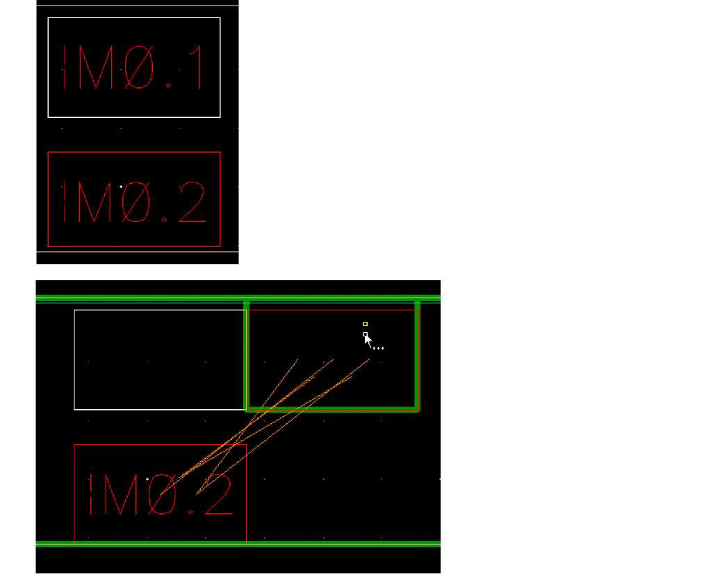 -
Release the mouse button to place the instance.
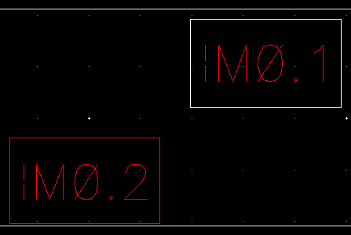
Method 2
- Right-click the instance. From the contextual menu, select Move. Click and release the left mouse button on the instance, drag it to the desired cell, and click again to place the instance.
- Select the instance. On the Modgen toolbar, click the Move button. Click and release the left mouse button on the instance, drag it to the desired cell, and click again to place the instance.
Working With Rows and Columns
This section includes the following topics:
Adding Empty Rows and Columns
This feature enables you add an empty row or column in the design display area.
Adding An Empty Row
To add an empty row, select an instance in the row above or below which you want to add the row.
- On the Modgen toolbar, click the arrow next to the Add Empty Row/Column 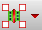 button and select Add Empty Row Top or Add Empty Row Bottom.
- Right-click the instance, navigate to Add Empty Row/Column, and select Top or Bottom.
Adding an Empty Column
To add an empty column, select the instance to the right or left of which you want to add the column.
- On the Modgen toolbar, click the down arrow next to the Add Empty Row/Column button and select Add Empty Row Left or Add Empty Row Right.
-
Right-click the instance, point to Add Empty Row/Column, and select Left or Right.
An empty column is added.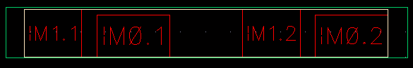
Instead of using the GUI, use the mgAddEmptyRCCB API to add empty rows and columns.
Highlighting Empty Rows and Columns
An empty row or column is highlighted in the Modgen editor window. The highlighting is on by default. When highlighting is on, the shortcut menu displays the Remove Empty Row/column Highlight option to turn the highlighting off as shown in the figure below.
When highlighting is off, the shortcut menu displays the Highlight Empty Row/Column option to turn the highlighting on, as shown in the figure below.
These options are displayed in the shortcut menu when:
However, the placement of this option in the shortcut menu is different in both these cases.
When you perform an undo operation in the Modgen editor window, the highlighting, if on, gets automatically turned off.
Alternative SKILL Function: mgHilightEmptyRowColumnCB
The Zoom to Fit option also includes empty rows and columns in the Modgen editor window even if they are at the outer edges of the window.
Deleting Empty Rows and Columns
As a part of interactive Modgen editing, you can delete empty rows or columns from the Modgen editor window. To delete empty rows, you need to right-click the empty row and select the Delete Empty Row option from the shortcut menu, as shown in the figure below.
To delete empty columns, you need to right-click the empty columns and select the Delete Empty Columns option.
If you right-click at the location where an empty row and an empty column are overlapping, then both these options are displayed in the shortcut menu. You can select any of these options to either delete the row or column.
These options are displayed in the shortcut menu when:
Alternative SKILL Function: mgDeleteEmptyRowColumnCB
To delete all empty rows and columns of the Modgen, use mgDeleteAllEmptyRowColumnCB.
Selecting Rows and Columns
To move or swap the entire row or column, you may need to select the entire row or column.
Selecting Rows
- Select the instance in a row.
- Right-click the instance, point to Select Row/Column, and select Select Entire Row.
- The entire row will be selected.
Selecting Columns
- Select the instance in a column.
- Right-click the instance, point to Select Row/Column, and select Select Entire Column.
- The entire column will be selected.
Alternative SKILL Function: mgSelectRowColCB
Rotating and Flipping Instances
You rotate or flip instances for the following reasons:
- To optimize placement
- To optimize routing; for example, to optimally connect resistors in a series
- To allow for matched routing
-
Select the instance that you want to rotate.
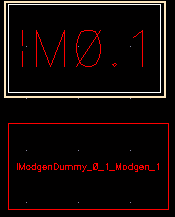
-
Do one of the following:
- On the Modgen toolbar, click the Rotate Left or Rotate Right button.
-
Right-click the instance, point to Rotate/Flip, and select Rotate Left or Rotate Right.
Alternative SKILL Functions: mgRotateLeftCB, mgRotateRightCB
The selected instance is rotated.
Flipping Instances
-
In the layout window, choose Options – Display to view the Display Options form.
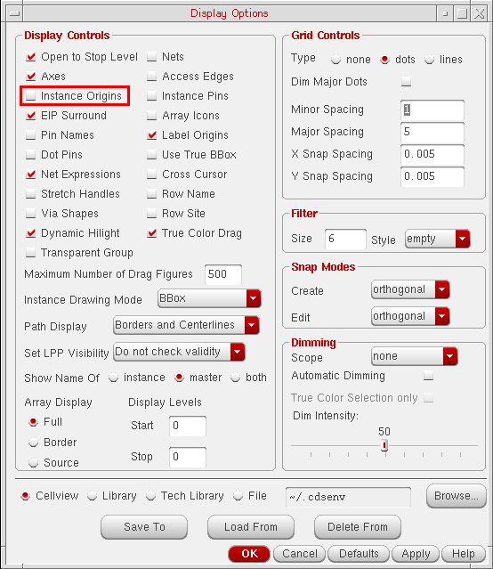 - In the Display Controls group box, select the Instance Origins check box.
- Click the OK button to save the settings.
-
Select the instance in the design display area.
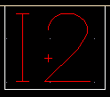 -
Do one of the following:
- On the Modgen toolbar, click the Flip Horizontal or Flip Vertical button.
-
Right-click the instance, point to Rotate/Flip, and select Flip Horizontal or Flip Vertical.
Alternative SKILL Functions: mgFlipHorizontalCB, mgFlipVerticalCB
The selected instances is flipped. In the figure below, notice that the plus sign has moved upward.
Swapping Instances
By using the swap function, you can interchange the position of two instances, rows, or columns. This helps optimize routing. For example, by swapping instances, you can optimally connect resistors in a series.
-
Select the two required instances in the design display area.
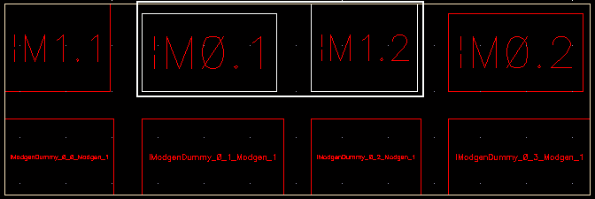
-
Do one of the following:
- On the Modgen toolbar, click the arrow next to the Swap button, and select Swap Instances.
-
Right-click the selected instances, point to Swap, and select Swap Instances.
Alternative SKILL Function: mgSwapCB
The selected instances are swapped. In the figure below, notice that M1.2 and M0.2 are swapped.
-
Select an instance each in the two rows that you want to swap.
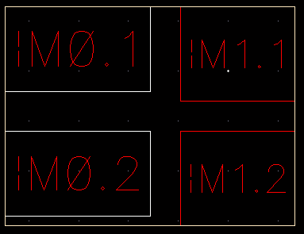 - Do one of the following:
-
The selected rows are swapped. In the figure below, notice that the row (
M0.2 | M1.2) is swapped with the row (M0.1 | M1.1).
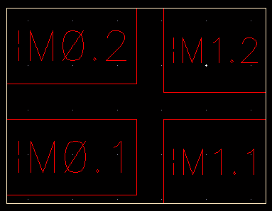
-
Select an instance each in the two columns that you want to swap.
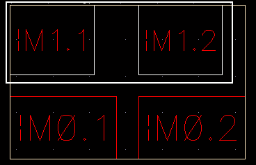 - Do one of the following:
-
The selected columns are swapped. In the figure below, notice that the column
(Mi.2 | M0.2)is swapped with the column(M1.1 | M0.1).
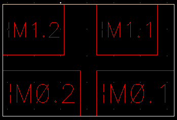
Return to top